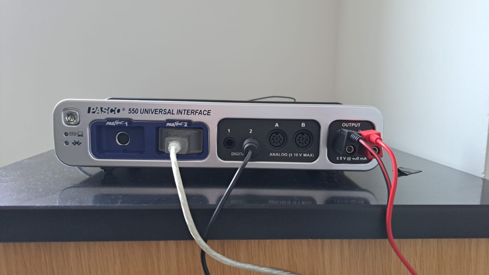
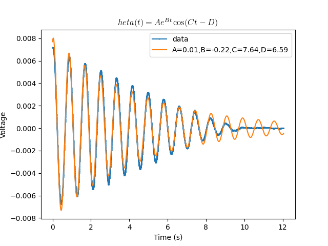

Lab 2 The Nonlinear Phase Plane
(under construction)
Spring 2025 • E91 • Swarthmore College • Due TBD
In this lab, you will use an asymmetric rotating disk to explore the non-linear phase plane.
Logistics
This lab is self-scheduled; you will carry out the tasks here on your own time. The due date for the lab report is TBD and will be after spring break. The apparatus is located in Singer Hall 246. This space is shared with multiple other engineering labs, so please be mindful of the space and respectful of other people’s work.
Sign up for times here using the drop-down menu as illustrated below; an additional sheet has been added for Lab 2. You should all have OneCard access to Singer 246, and if you have any trouble accessing the room, please contact Jennifer Parisien.

Your group is the same as for Lab 1.
Experiments

Equipment and hardware
This lab makes use of a rotating disk attached to a pulley that is connected to two springs, one of which is driven by a DC motor whose rotational frequency you can control programmatically. The other spring is simply tied to ground.


In this lab, instead of using raw potentiometer voltages that must be calibrated against ‘real-world’ angles, you will use a professionally designed rotational motion sensor that can simply tell us the angular displacement $\theta$ and angular velocity $\omega$, with the optional ability to ‘zero’ the angle reading at the click of a button. The rotational motion sensor is wired with a proprietary serial connection to the PASCO 850 Universal Interface, which reads the analog signal and interprets it in units of your choice. (No callibration yay! unfortunately, you will still have to perform callibration in a later E91 lab)
The DC motor is connected to ground and power (black and red) on the 850 Universal Interface, which is technically a ‘signal generator’. This means that the hardware is capable of emitting electrical signals that are a function of time, but we will be using the simplest signal of all: Direct Current. You will be able to control how many volts to provide to the motor. It is rated for 12 V, but you will typically use values much lower than 12V. The motor shaft is connected, via a set screw, to an assembly that allows us to set the amplitude of the circular motion by increasing the length of the arm.

You will also see a plastic ‘U’-shaped device attached to the motor mount. This is a ‘photogate’, which sends a digital signal to the 850 Universal Interface. This signal is ‘on’ if the infrared ray across the two arms of the photogate is blocked (you should see a red LED light up if you place your hand between the photogate arms) and ‘off’ if the ray is not blocked.

The 850 Universal Interface is a proprietary input/output that serves the same function as the Analog Discovery did in Lab 1. It powers the DC motor with a confiurable DC signal, reads the analog signal from the rotational motion sensor and the digital signal from the photogate, and provides this information to your computer in a user-friendly way using a USB connection. Unlike the Analog Discovery, it must be powered separately.



Measurements
In this lab, you do not need to directly measure the mass and dimensions of the rotating disk.
Software
This lab will make use of PASCO Capstone, a proprietary software a license for which has been purchased by ENGR. If you would like to, you can download a copy of PASCO on your own computer; a license costs $1 per student per academic year, and you may be able to circumvent the need for a license by making use of a limited-time free trial. Note: No purchase is required for this lab. If you use the lab computer, you don’t need your own copy of PASCO Capstone.
PASCO Capstone can make use of a configuration file with extension *.cap. Download the workspace needed for this lab here. It will look approximately like this:

Capstone is fully configurable, so you are welcome to modify the settings and move things around if you so wish. If you find that a previous lab group has modified the settings from what you would expect, try reloading the *.cap file downloaded from here.
A video tutorial for Capstone is available here.
Wiring and Connections
This lab is less DIY than Lab 1. As such, you should not need to modify the wiring during the normal course of operation of this lab. However, if it turns out that you do need to reconnect the wires, here is a short summary.
- Connect the red and black wires that emerge from the motor into the red and black ports near the ‘signal generator’ part of the 850 Universal Interface.
- Use the ethernet – Tip-Sleeve cable to connect the Photogate to the 850. The ethernet cable goes in to the photogate and the T-S cable goes into one of the digital ports of the 850.
- Connect the silver wire that emerges from the rotational motion sensor into one of the ‘PASPort’ ports of the 850 Universal Interface.
Testing the virtual oscilloscope
After connecting your Analog Discovery to your computer and opening WaveForms, the software should recognize the Discovery 3 with a panel on the bottom right as shown here.

Start scanning the voltage reading by clicking ‘scan’ near the top left, which will start a real-time scan of the voltage reading from the potentiometer. Make sure that ‘mode’ is set to ‘Screen’ as shown here. 
You should see a trace of the voltage develop across the screen. ‘C2’ reads the voltage directly, whereas ‘M1’ is a moving average that acts as a low-pass filter, smoothing out the noise in the voltage. 
The scale and offset of the horizontal and vertical axes can be controlled using the panels on the right, as shown below. In my experience, a good value for time is 3 s/div and for the voltage is 10 mV/div, but you should feel free to change these settings to suit your needs. These settings do not affect the data collected; they only determine how the data are visualized.

Calibration
Before any dynamic data can be collected, you must calibrate the potentiometer. It is important that you perform the calibration as close as possible to when you collect dynamic data to minimize the possibility that environmental uncertainties introduce errors into the calibration. Such errors can be fixed during post-processing, but it is best to minimze them when collecting data.
Drift
It has been noticed that the rest reading of the potentiometer can sometimes drift. Therefore, after switching on the scope, you should wait for the rest reading to settle at a constant value. A good way to decide whether the potentiometer has ‘settled’ is to check if the reading is off by more than 1 mV in about a minute. Your mileage may vary; just keep in mind that this drift is bad for our experiment.
Calibrating at zero degrees
We will measure the angle from the vertical, and so the rest reading — when you are not doing anything to the pendulum — is zero degrees. After you are satisfied that the drift has settled down, make a 5-second recording at 1 kHz to record the rest reading. This is almost certainly overkill, but computers make it easy for us to save five thousand nearly-equal numbers just so we can average them later.
Select ‘Mode: Record’ as shown here, and set the sampling rate to 1 kHz with 5 s of total time.

From now on, the ‘record’ button will use these settings unless you change them.
Use the ‘Export’ button in the top-left corner to save the result as a CSV file named, e.g., Deg0.csv.
Calibrating at other angles
Use the protractor to make 5-second long recordings of the voltage when the pendulum is held to other angles. One lab partner should hold the pendulum up to the right angle while the other records the reading.
It is up to you to choose how many angles you would like to do this for; the gold standard is to do this at 10 degree intervals between $\theta = 0^{\circ}$ and $\theta = 170^{\circ}$; avoid trying to do this for $\theta = 180^{\circ}$. It is sufficient to do so for positive values of $\theta$, and to assume that the relationship between voltage and angular position is symmetric about $\theta = 0^{\circ}$.
It is recommended that you save each measurement with a name such as Deg20.csv, etc.
Dynamic Experiments
You will conduct a series of experiments in which the pendulum is held up to a certain angle and released from rest. Since you have already calibrated the voltage-angle relationship, you need not measure the angle at which you release the pendulum. For each experiment,
- Choose the number of seconds based on how long you think something interesting will happen. Enter this number in the ‘Config’ box on the top-left corner of WaveForms.
- Use a consistent frame rate when recording data. I recommend using 1 kHz, but you are welcome to use a different value as long as you keep it consistent.
- You may wish to test out the dynamics by using the ‘Screen’ instead of the ‘Record’ mode.
- Ensure that the precise moment of release from rest is captured on the oscilloscope. This means that you should click ‘Record’ before you release the pendulum.

Collect dynamic data for the following six cases:
| Case | Description | Approximate Angle |
|---|---|---|
| Case 1 | Low acute angle | Below $30^{\circ}$ |
| Case 2 | Medium acute angle | Between $60^{\circ}$ and $90^{\circ}$ |
| Case 3 | High acute angle | A little below $90^{\circ}$ |
| Case 4 | Obtuse angle | Between $90^{\circ}$ and $120^{\circ}$ |
| Case 5 | High obtuse angle | Around $150^{\circ}$ |
| Case 6 | Nearly vertical | Just less than $180^{\circ}$ |
Save each case as a *.csv file.
Checklist for experiments
- Task 1
- Task 2
- Task 2.5
Theory
The equation of motion for a frictionless compound pendulum can be expressed as
\[\frac{d}{dt} \left( \boldsymbol{h} \right) = \boldsymbol{M}_O,\]where $\mathbf{h}$ is the angular momentum of the pendulum about its pivot and $\boldsymbol{M}$ is the moment, $\boldsymbol{r} \times \boldsymbol{F}$ relative to the pivot. After some vector calculus, it is possible to show that the equation becomes
\[\ddot{\theta} + \frac{m g l}{I_O} \sin \theta = 0,\]where
- $m$ is the mass of the object
- $g$ is the acceleration due to gravity
- $l$ is the distance from the pivot to the center of mass
- $I_O$ is the moment of inertia about the pivot.
Recall that the moment of inertia about the centroid of a rectangle with width $w$ and height $h$ in the out-of-plane direction is
\[I_{G,z} = \frac{m}{12} \left( w^2 + h^2\right),\]where `$G$’ stands for ‘center of gravity / centroid’. Using the parallel axis theorem, it is possible to write the moment of inertia about a different point — here, the pivot — as
\[I_O = I_G + m l^2.\]Making appropriate simplifications, use this information to calculate a numerical value for the coefficient in the equation of motion above.
The small-angle approximation
Under the small-angle approximation, $\sin \theta \approx \theta$. With this simplification in mind, write down the equation of motion for this pendulum when friction is neglected. Leave your answer in terms of $m$, $g$, $l$, and $I_O$ for now. Solve this differential equation for the initial condition $\theta(0) = \theta_0$ and $\dot{\theta}(0) = 0$, where $\theta_0$ is the angle with which the pendulum is initially released.
What is the numerical value of the pendulum frequency predicted by this equation? Later, you will compare this numerical value against the observed frequency from the first few cycles of oscillation in each case of your dynamic experiments.
In your answer, make sure you think about the difference between ‘angular frequency’ and ‘frequency’.
Incorporating damping effects
The governing differential equation above is missing the effect of damping. Write down a more complete (still linear) equation of motion in which there is a damping term with units of $T^{-1}$. Then, solve this equation of motion for $\theta(t)$ with the same initial condition as before. Leave your answer in symbolic form; you may find it useful to substitute $\omega^2$ for $m g l/I_O$ when doing so. Your final result will have an exponential term multiplying a cosine term.
Incorporating nonlinear effects
Write down what the governing differential equation would be if the equation included both nonlinear effects and damping effects.
Data Analysis
Experimentally observed frequency
Your dynamic experiments, being affected by friction like all real engineered systems, will have a decaying behaviour in which oscillatory motion eventually dies out until there is no more motion. However, there is often a nearly-constant period with which the pendulum oscillates while it does.
Your first data analysis task is to determine the experimentally observed frequency (in `swings per second’, with units of Hz) for each of cases 1 through 6. You may choose any method to do this, as long as you are consistent across the different experiments. Use your best engineering judgement, and be prepared to explain in your lab report your method and your rationale for choosing this method.
Note that:
- we are interested only in the frequency during the first few (say, first five) swings of the pendulum
- we would like a single value for each case, even if you notice the frequency changing with time.
Comparison with theory
Compare your measurements of the pendulum’s frequency with the theoretical value that you found from using the equation of motion for a frictionless pendulum undergoing small oscillations. Present this data visually using any method of your choice.
Calibration
Using the static data that you collected, make a plot of voltage on the horizontal axis and angle $\theta$ (in degrees) on the vertical axis. Draw a line (or, if necessary, a curve) of best fit, and determine its coefficients. Your final result should look something like the following, although your specific numbers may be different.

Use these coefficients to translate data from all six cases into angles instead of voltages. You do not need to turn in this data.
Without any further data processing, plot the resulting information on six axes neatly arranged in a 2x3 or 3x2 grid. In these plots, the y-axis should be in units of degrees, and the x-axis in units of seconds. Note: Do not remove any data from the beginning of your measurement. You may choose to truncate your data toward the end if the pendulum isn’t doing anything interesting.
Data fitting and the damping parameter
It will be clear that the experiments involve such a large degree of damping that using the undamped equations of motion of the pendulum is not very useful beyong a rudimentary estimate of the frequency of its motion. In the next step, you will use the linearized equations of motion with damping to fit the experimental data. To do this, you must have the correct solution to the ‘incorporating damping effects’ part of the Theory section. This solution is in the form of a function $\theta(t)$ that has several parameters; although some of these parameters can be determined theoretically, in this section we will determine all parameters by a best-fit procedure that is described below.
Fitting the pendulum’s nonlinear (?) dynamics to the linear model with damping.
When performing a fit to the data, it is necessary to incorporate some additional parameters that are entirely ‘experimental’, in the sense that they help us reconcile the observed data with the mathematical model that arises from the laws of physics. One such simple model could be of the form
\[\theta(t) = A e^{Bt} \cos (Ct -D),\]where $B$ and $C$ have some physical meaning, as you found earlier in the theory section; $A$ serves to scale the linear solutions based on the initial condition (recall that, in the linear world, 2x a solution is also a solution), and $D$ serves to move the data around on the horizontal axis so that it starts at the ‘top’ of the cosine curve.
Your task is to:
- attempt to fit all the data you collected to $\theta(t)$ of the above form, by obtaining parameters ${A,B,C,D}$ for each of the dynamic experiments that you conducted.
- Make plots of all your experimental data overlaid with the best-fit model that you can manage. It is unclear how well the model will work for large $\theta_0$.
- Make a visual summary of how the parameters change with $\theta_0$; this can be in the form of one or more scatter plots, bar charts, or line plots.
- Rate how well each of your dynamic experiments is captured by the linear model overall.
Below, you will find Python and MATLAB scripts that performs a fit to this equation for a sample dataset that was collected from this apparatus.
import pandas as pd
from statistics import mean,median,stdev
import matplotlib.pyplot as plt
import numpy as np
from scipy.optimize import curve_fit
# Define a function to which data will be fit.
def theta_solution(t,a,b,c,d):
return a*np.exp(b*t)*np.cos(c*t-d)
# Define a function that can read a data file.
def getData(file):
tab1 = pd.read_csv(file,
index_col=None,
header=None,
names=['Time','Voltage','AveVoltage'],
skiprows=12,
)
return tab1
# Read one of the data files.
experiment_1 = getData("Dynamic1.csv")
# Remove data before and after
start = 450
finis = 12500
# Center data at zero vertically and horizontally
v_offset = experiment_1["AveVoltage"][finis]
t_offset = experiment_1["Time"][start]
# Create data vectors
t_data = np.array(experiment_1["Time"][start:finis]) - t_offset
v_data = np.array(experiment_1["AveVoltage"][start:finis]) - v_offset
# Fit curve and extract coefficients.
curvefit = curve_fit(theta_solution,t_data,v_data)
a = curvefit[0][0]
b = curvefit[0][1]
c = curvefit[0][2]
d = curvefit[0][3]
# Use coefficients to build the {x,y} data that arises from the model
theta_model_vals = theta_solution(t_data,a,b,c,d)
# Plotting
labelstring = f"A={a:.2f},B={b:.2f},cC={c:.2f},D={d:.2f}"
titlestring = "$\theta(t) = A e^{Bt} \cos(Ct -D)$"
plt.plot(t_data,v_data,marker='.',markersize=1,label='data')
plt.xlabel("Time (s)")
plt.ylabel("Voltage")
plt.plot(t_data,theta_model_vals,label=labelstring)
plt.title(titlestring,usetex=True)
plt.legend()
plt.savefig("curvefit.png")
plt.show()

You may also choose to use MATLAB. I recommend that you save the following two functions as separate files:
% Define the function to which data will be fit
function y = theta_solution(t, a, b, c, d)
y = a .* exp(b .* t) .* cos(c .* t - d);
end
% Define a function that can read a data file
function tab1 = getData(file)
opts = detectImportOptions(file, 'NumHeaderLines', 12);
opts.VariableNames = {'Time', 'Voltage', 'AveVoltage'};
tab1 = readtable(file, opts);
end
and then run the following script:
% Read one of the data files using the 'get table' function of MATLAB.
experiment_1 = getData("Dynamic1.csv");
% Remove data before and after
startIdx = 450;
finisIdx = 12500;
% Center data at zero vertically and horizontally
v_offset = experiment_1.AveVoltage(finisIdx);
t_offset = experiment_1.Time(startIdx);
% Create data vectors
t_data = experiment_1.Time(startIdx:finisIdx) - t_offset;
v_data = experiment_1.AveVoltage(startIdx:finisIdx) - v_offset;
% Fit curve and extract coefficients
fitFunc = @(params, t) theta_solution(t, params(1), params(2), params(3), params(4));
initial_guess = [0.01, -0.22, 7.64,6.59];
% I cheated here and used a nearly-perfect guess!
% You can explore other curve-fitting techniques, or just guess ... or use
% Python ¯\_(ツ)_/¯
options = optimset('Display', 'off');
params = lsqcurvefit(fitFunc, initial_guess, t_data, v_data, [], [], options);
% Extract coefficients
a = params(1);
b = params(2);
c = params(3);
d = params(4);
% Use coefficients to build the {x, y} data that arises from the model
theta_model_vals = theta_solution(t_data, a, b, c, d);
% Plotting
figure;
plot(t_data, v_data, '.', 'MarkerSize', 1, 'DisplayName', 'data');
hold on;
plot(t_data, theta_model_vals, 'DisplayName', sprintf('A=%.2f, B=%.2f, C=%.2f, D=%.2f', a, b, c, d));
hold off;
xlabel('Time (s)');
ylabel('Voltage');
title('\theta(t) = A e^{Bt} \cos(Ct - D)', 'Interpreter', 'latex');
legend;
saveas(gcf, 'curvefit_matlab.png');
Some debugging will probably be required.
Narrative
Write a lab report based on the pieces of information you have collected and/or generated during these experiments. Make it as self-contained as possible, so that the reader can fully understand the experiments you conducted, the data analysis that you conducted, and the theory that ties them together. Comment on the ability of the linear model of pendulum dynamics to predict the behavior of a real pendulum.
Turn in a single PDF with figures embedded in the narrative. Attach any code you write in an appendix.